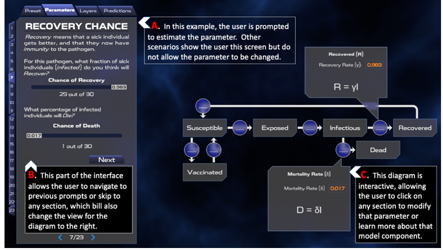

About Polymorphic Games
Polymorphic Games is an experimental video game development studio based at the University of Idaho. We develop video games, interactive simulations, and visualizations that feature STEM concepts as core mechanics. Our main focus is Evolutionary Games that feature enemies that adapt to the player using mathematical models of biological evolution. We have also collaborated with many different researchers to help them represent their model systems as interactive simulations or dynamic visualizations.
Evolutionary Games
Instead of pre-programming enemy behaviors to escalate difficulty, our games use populations of creatures that evolve specifically to beat your strategy. Each creature has its own traits that it can pass onto its offspring. After you beat one wave of creatures, the creatures that were the hardest to beat reproduce and you’ll fight their offspring in the next wave. Evolving traits include features like size, speed, damage, resistances, and behavior. We use real principles of evolutionary biology to create a model that includes all the components of real evolution — variation, inheritance, selection, and time — just operating at a much faster pace. This creates dynamic enemies that adapt to how YOU play the game. We just give evolution the space to work.
Our Development Model
Our studio is based on the University of Idaho campus and populated by undergraduate students. A university setting is the one place where you can find programmers, artists, writers, musicians, marketers, and biologists — everyone you need to make a video game with foundations in evolutionary biology. We hire insanely talented teams of undergraduate students to develop our games. This gives us a team that can think outside the box, and it provides a great student experience. Our employees get to build skills in communication, leadership, and collaboration that they take with them when they graduate, all while honing their skills in their own trade.
Outbreak Simulator Details
Outbreak Simulator is a tool that allows users to simulate the spread of an infectious disease and explore the impact of different interventions. The simulation can be used to promote systems thinking and data science literacy, as users can see how different factors interact to influence the spread of the disease and how data can be used to track, visualize, and understand the outbreak. Outbreak Simulator can be used in educational, research, and public health settings to help people gain a better understanding of infectious disease dynamics and the role of data in outbreak response.
Infectious Disease, Systems Thinking, and Public Education
The SARS-CoV-2 pandemic highlighted that many people were not sufficiently equipped to understand the complex nature of infectious diseases and the uncertainties involved in managing them. This lack of public understanding made people more vulnerable to misinformation and disinformation, resulting in the formation of misconceptions about infectious diseases and public health. Pandemic mitigation strategies and compliance with public health guidance suffered as a result. Equipping the public to better understand infectious diseases requires integration of multiple complex systems, including pathogen biology, the human immune system, and systems of human behavior that are influenced by economic, social, and environmental factors. Tools that improve domain knowledge, systems thinking skills, scientific reasoning, and data literacy (e.g., simulation, data visualization) could help better prepare the public to grapple with the complexity of infectious disease dynamics.
Computer simulations with interactive visualizations of dynamic phenomenon are a potentially useful vehicle for presenting infectious diseases as a complex system. This promotes systems thinking, which is the ability to see connections and relationships between different factors and can help people understand how small changes in one area can have large effects on the overall system. Adopting a systems thinking framework can demonstrate dynamic relationships between components of a larger whole (Von Bertalanffy & Sutherland, 1974), multi-level heterogeneity of agents, nonlinear dynamics, stochasticity, and emergence of new patterns (Eckhardt et al., 2020; J. H. Miller & Page, 2009; Pearce & Merletti, 2006; Roux, 2011). Systems thinking is essential in understanding the complex dynamics of infectious disease and can help to promote better decision-making and problem-solving. To meet this need, we created Outbreak Simulator, a game-like interactive simulation that uses engaging scenarios of infectious disease to improve domain knowledge (viruses and infectious diseases), systems thinking (complexity, component relationships, emergent behaviors), and data literacy (interpretation of visualizations and argumentation from evidence).
Mathematical Model of Infectious Disease
Outbreak Simulator uses a compartment model of disease (Weissman et al., 2020) in which the population is divided into categories (see image below): Susceptible (S), Exposed (E), Infected (I), Vaccinated (V), Recovered (R), or Deceased (D). The model estimates the rates of exchange between categories over a given time interval (t) using differential equations. When the model parameters are known and key assumptions are met, the differential equations can estimate the epidemic curve of an outbreak. The two most critical assumptions are that the population is homogeneous and well mixed and is fixed in size. Deterministic and stochastic discrete time (Gillespie, 1976) versions of the models offer simpler but computationally performant (deterministic model) and mathematically rigorous but computationally slower (stochastic model) options to use in different educational contexts. We have pre-parameterized scenarios for influenza (multiple strains) and SARS-CoV-2 (multiple variants) and are creating more for additional diseases including Ebola, Measles, Mumps, Rubella, and the common cold. Outbreak Simulator can also be used to model fictional disease systems. For example, many science fiction and horror fiction treatments of zombies are based on fictional viruses (e.g. World War Z, Resident Evil, Walking Dead), and these scenarios could prove to be engaging learning environments for some users(E. T. Lofgren et al., 2016; Smith, 2009).

Geospatial Representation
The compartment model described above assumes a homogeneous and well mixed population - an assumption that is clearly violated when we consider the geographic scope of many infectious diseases. For example, consider the population of the continental United States. There are many factors within the US population that affect the mixing of individuals, including transportation patterns at the local and national scale. While modern transportation increases the mixing of the US population compared to previous pandemics (such as the 1918 influenza outbreak), we have seen that social distancing and travel restrictions can profoundly affect transmission dynamics at the national scale. There can also be considerable geospatial variation in the parameters of the model itself. For example, contact rate (number of individuals that an infectious individual contacts per time interval t) is likely to vary between urban and rural environments. Even seasonal outbreaks of influenza and the common cold can vary depending on spatial and temporal variation of temperature and host health (E. Lofgren et al., 2007). These spatial effects on the modeling of disease can be important in showing learners how outbreaks might affect their region, and how spatial heterogeneity adds complexity to model predictions. To represent the spatial effects of infectious disease dynamics, our simulation models the population as a gridded set of subpopulations. Outbreak Simulator incorporates also uses spatial data layers to modify the parameters of the disease and movement models for each grid cell. We have installed two movement models – a diffusion model and a gravitation model (Simini et al., 2021). We use these models for commuting scale movements between adjacent grid cells. For longer (national) movement, we use a data layer of the travel rates between the 150 largest airports in the continental US.

Embedded Data Visualizations
Outbreak Simulator uses interactive visualizations intended to help users understand the dynamics of disease ecology, practice scientific inquiry skills, and build data literacy. The image below is a screen shot of Outbreak Simulator, annotated with letters which indicate system components and different visualizations. INFECTED, EXPOSED, and DECEASED individuals are indicated in area (I) on the map by color. The interactive map (A) can be panned, zoomed, and displayed with different data (satellite with population data overlay shown). Elapsed time, speed controls, help, and settings are accessed with a collapsible panel (B). Display settings such as color and visibility for each model compartment on the map can also be customized (C). Other features include a population health bar (D), buttons for initiating an outbreak, an Interventions menu (E), and an Event Log that describes simulation milestones such as initial outbreak location and timestamps of infection events (F). The intervention option allows the user to test how choices related to public health guidance (such as air travel restrictions, local lockdowns, masking, and vaccination) might impact outbreak dynamics.
Data visualizations in Outbreak Simulator are interactive, dynamic, and inter-related. For example, the spatial dynamics of the outbreak can be observed by watching the expansion of red (infected) color across the map (I), by scrolling through the event log (F), or by viewing the epidemic curve of a selected state (G). The dynamic graphs (G and H) are interactive in that each model compartment can be toggled and the scale dynamically adjusted. Hovering over the graph shows the exact values for all model component at the hovered time point (G).
Model Parameterization
Outbreak Simulator parameterizes infectious disease dynamics with an interactive mental model. The beginning of each scenario provides grade appropriate information about the disease. The user is then guided through model parameterization using a drag and drop interface and plain language narrative-based scaffolding. The screenshot below shows a scenario in which the model parameters represent the 1918 influenza strain (Chowell et al., 2007). The interface allows the user to change model parameters using sliders or direct numerical input.
Literature Cited
- Eckhardt M, Hultquist JF, Kaake RM, Hüttenhain R, Krogan NJ. A systems approach to infectious disease. Nat Rev Genet. 2020;21: 339–354. doi:10.1038/s41576-020-0212-5
- Gillespie DT. A general method for numerically simulating the stochastic time evolution of coupled chemical reactions. J Comput Phys. 1976;22: 403–434. doi:https://doi.org/10.1016/0021-9991(76)90041-3
- Lofgren E, Fefferman NH, Naumov YN, Gorski J, Naumova EN. Influenza Seasonality: Underlying Causes and Modeling Theories. J Virol. 2007;81: 5429–5436. doi:10.1128/jvi.01680-06
- Miller JH, Page S. Complex adaptive systems. Complex Adaptive Systems. Princeton university press; 2009
- Pearce N, Merletti F. Complexity, simplicity, and epidemiology. Int J Epidemiol. 2006;35: 515–519
- Roux AVD. Complex systems thinking and current impasses in health disparities research. Am J Public Health. 2011;101: 1627–1634. doi:10.2105/AJPH.2011.300149
- Simini F, Barlacchi G, Luca M, Pappalardo L. A Deep Gravity model for mobility flows generation. Nat Commun. 2021;12. doi:10.1038/s41467-021-26752-4
- Von Bertalanffy L, Sutherland JW. General systems theory: Foundations, developments, applications. IEEE Trans Syst Man Cybern. 1974; 592.
- Weissman GE, Crane-Droesch A, Chivers C, Luong TB, Hanish A, Levy MZ, et al. Modeling Epidemics With Compartmental Models. Ann Intern Med. 2020;173: 21–28. doi:10.7326/M20-1260
Support